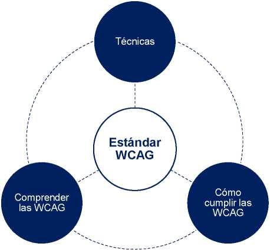

Accesibilidad Web
La accesibilidad web se puede definir como el conjunto de características que debe incorporar un sitio web para que el mayor número de personas en el mayor número de circunstancias pueda acceder a él y usarlo.
Estas características deben permitir:
- Descubrir los elementos que conforman una página web
- Percibir y comprender los estados, las propiedades de cada elemento.
- Operar con la página web
- Comprender el feedback de la operación
Estas características dan al usuario autonomía, control y seguridad al momento de recorrer la web.
La accesibilidad web es un derecho que tenemos todos a ser autónomos en internet, es decir, a ser capaces de acceder a los contenidos y funcionalidades independientemente de nuestra diversidad funcional o del contexto de uso.
¿Qué son las Pautas WCAG?
Las Pautas de Accesibilidad para el Contenido Web disponen de una serie de recomendaciones con el objetivo de hacer el contenido web más accesible, especialmente a personas con discapacidad.
Publicadas por el W3C, la principal organización mundial de estándares de internet, en la actualidad las WCAG son las pautas más reconocidas, seguidas y exigidas a nivel internacional en lo relativo a la accesibilidad web.
¿Cómo se organizan las WCAG?
Las WCAG se ogranizan en cuatro capas: 4 principios, 13 pautas, 78 criterios de conformidad y mas de 580 técnicas.
Los cuatro principios:
- Perceptible
- Operable
- Comprensible
- Robusto
Los principios se dividen en pautas, con el objetivo de agrupar de un modo lógico los criterios de conformidad. Las pautas no son evaluables.
Los criterios de conformidad sí son evaluables y se escalan en 3 niveles:
- A (nivel más bajo)
- AA (/nivel medio)
- AAA (nivel más alto)
Cada criterio de conformidad propone una serie de técnicas a seguir y documenta una serie de errores a evitar para alcanzar la conformidad. Por su parte cada técnica y cada error tienen su procedimiento de prueba.
¿Qué es el testing?
Es desarrollar pruebas para analizar la calidad de un producto, software o en este caso páginas web.
Se buscan errores o problemas que no permiten el correcto funcionamiento o acceso de lo que estamos analizando.
Nos permite comprobar si una página web puede ser usada de diferentes maneras de percepción. y también con las distintas tecnologías asistivas
Herramientas de testeo
- AXE
- WAVE
- CCA
- Teclado
- Zoom al 200% y al 400%
- Lector de pantalla NVDA (para Windows)
Incidencias más comunes en las páginas web
- Texto de bajo contraste 83,9%
- Falta de texto alternativo 55,4%
- links vacíos 50,1%
- Falta de etiquetas de entradas para formularios 46,1%
- Botones vacíos 27,2%
- Falta el idioma del documento 22,3%